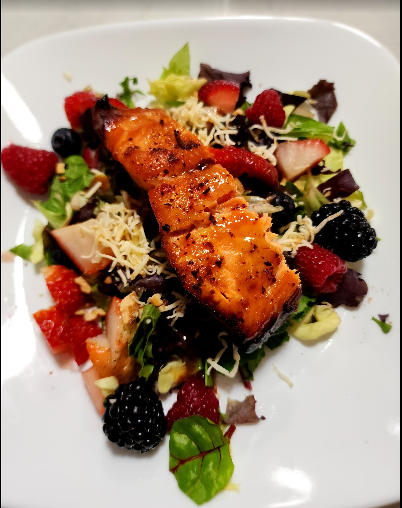

Air Fryer Honey Dijon Salmon

Ingredients
- 2 skin-on salmon steaks, about 300-400 grams
- 30 g Avocado oil
- 25 g Honey
- 30 g Dijon
- To taste: kosher salt, black pepper, garlic powder, seasoned salt, paprika, and parsley flakes
Directions
- Prep Glaze: Whisk honey, Dijon, and avocado oil into an emulsion; brush over both sides of the salmon.
- Season: Sprinkle both sides with kosher salt, black pepper, garlic powder, paprika, seasoned salt, and parsley flakes.
- Air Fry: Cook @400°F for 8-10 minutes.
- Serve: Transfer to a serving platter and serve on your favorite salad.
Michael Fritsche
mbf@fritsche.org